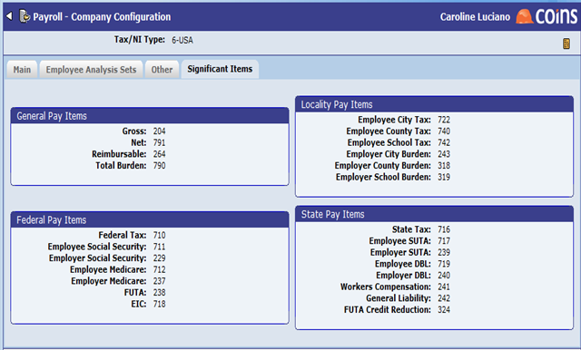

Journal Types in Project Management
Journals are used to record project communications. These can be maintained in , or in Project Management using Journal Types.

For each journal type, you can do the following:
- the Calendar field to specify whether creates an entry in the Activity Workbench when creating a new journal of that type, and
- the Milestone field whether the journal is included as a milestone by default.
We recommend you create at least a journal type for emails, to be used when recording emails sent by and emails imported from Microsoft Exchange.
Configuration
Use Configuration - Activity Workbench tab to define which journal type is associated with emails.